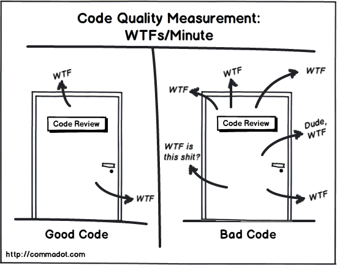
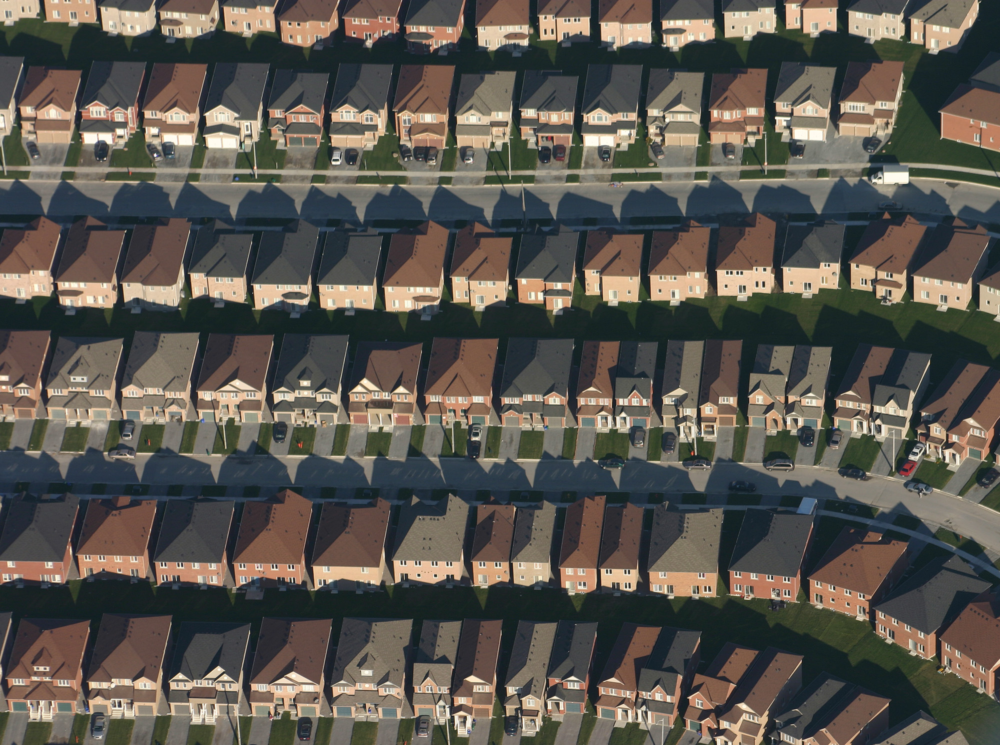

Building rock
solid software
in
the real
world
Improving team
workflow to
improve your
software
Omni Adams
@omnicolor
About me
I work at Ning
Acquired by Glam
errr... → sorry
sorry
Glam Media
PHP
Python
Javascript
I write code
Mainly in PHP and javascript
I play → hockey
… hockey
I have → a wife
wife, … a kid, and a cat
I drink → beer
beer … especially if there are clouds around
enough about me
→ this talk is about
how to build better software as a team
not perfect
can be better
improve process to improve software
→ here's a typical workflow
workflow … for software's lifecycle
plan
code
run automated checks
Get a peer review
while CI builds it
you get beer
→ this talk is not
Planning
about planning
nor is it about → coding
Coding
… coding
sure you're great coders
don't need any help
never make mistakes
but I bet your team members do
we'll talk about → automated checks
Automated checks
automated checks … to do QA on code
before
it gets committed
We'll talk quite a bit → about code reviews
Code reviews
code reviews … your chance to head off facepalm code
before
it causes any damage
we'll talk some about → submitting code
Submitting your code
submitting code … and possibly stopping it there
if it doesn't meet standards
and finally we'll talk about → what happens
After code is submitted
what happens … after code gets submitted
and what you can do at that point
Automated checks
sorry dave,
I can't let
you do that
first up: automated checks
Some things are easy to reject at this point
failing tests or syntax errors for example
most of these can also be run in your build
Automated checks
Lint
PHPUnit
PHP_CodeSniffer
PHPMD
PHPCPD
PHPDCD
Code coverage
Here's an alphabet soup of checks you can run
we'll go through these individually
all of these help coders fix mistakes before they commit them
php -l
PHP lint
Bare minimum
Finds syntax errors, or things that might cause a fatal error
A more rigorous tool for catching problems is → phpunit
… PHPUnit
the de facto standard for unit testing
You could probably use simple test if you wanted
Many talks about PHPunit at this conf and others
so I'll gloss over testing
lint and PHPunit should run pre-commit and on CI server
everything else we talk about should be available to devs
and run in CI for reporting
PHPCode_Sniffer
Code sniffer
statically analyzes code for "smells" or bad things
like missing docblocks
bad indentation
braces in the wrong place
most things in your style guide can be coded as a smell
next is → PHPMD
… PHPMD
The message detector
bad language constructs, like eval and goto
unused variables
Excessive complexity
then there's the → PHPCPD
PHPCPD
… PHPCPD
copy paste detector
finds code blocks that are similar
should be refactored so the common code is in one place
keeps from having to remember to fix in all places
next is the → PHPDCD
PHPDCD
… PHPDCD
PHP dead code detector
find unreachable or uncalled code
code after a return or exit
code in a conditional that never fires
finally, there's → code coverage
Code coverage
… code coverage
not really an automated check
you may want to run as pre-flight check
but shouldn't block submission
moving on to → code reviews
Code reviews
… code reviews
your chance to point out a coworker is doin it rong
I've used two code review packages
both are free as in speech and beer
the first is → review board
Review Board
… review board
written in Python and Django
pros:
you host on your server
code never leaves your network
cons:
You host it on your server
codereview.appspot.com
codereview.appspot.com
based on Mondrian used internally at Google
written by Guido van Rossum, creator of Python
you do have to upload to Google's servers
there are 3 types of reviews → pre-review
Code reviews
… pre-review
which stops bad code from getting to production
but can slow down development
there's also → post-review
Code reviews
… post-review
where the bad code is already committed
and can make it into production
finally, there's → a team review with a projector
Code reviews

… a team review with a projector
you display code on a screen and let the whole team review
this can really embarrass people
and can split the team into us and them
groupthink is a real possibility
and junior team members can get really stressed
→ so what are you looking for?
Code reviews
What tools can't catch:
Logic errors
Off-by-one errors
Obvious performance problems
Refactoring opportunities
Bad/misleading documentation
What tools missed:
Style problems
Syntax errors
Typos
Unreachable code
Useless tests
Missing tests
anything the tools couldn't catch
logic errors (like ifs that don't make sense)
loops with off-by-one issues
performance problems (SQL in a loop)
things to refactor (large methods)
or
things they just missed
Typos (variable names, documentation)
Tests that don't have assertions
Methods without tests
Style guides
to do reviews right, you need a good style guide
some people don't have style
and → some do
Style guides
… some do
So how do you we create a style guide?
you've got → two options
Style guides
Make your own
Use existing
roll your own
use an existing
Style guides
build your own involves:
look at your code build guide off that
don't have to change your code
More changes to code sniffer to use it, if you even can
New developers will argue against it
can be difficult to agree on styles
or you can → use an existing guide
Style guides

use an existing guide like pear or zend
well established
smart people made them
code sniffer may already have sniffs
very explicit
Your team probably won't agree
your existing code probably doesn't already follow guide
/